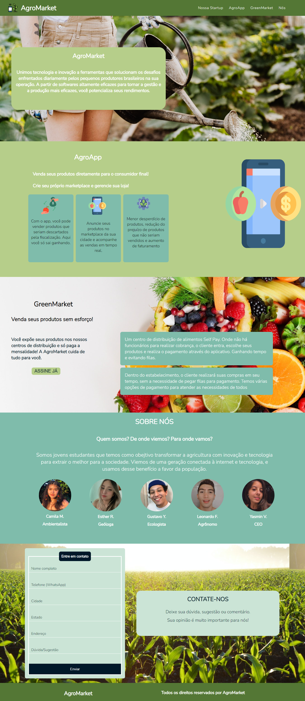

<div class="modal-background">
    <div class="modal-dialog">
      <div class="modal-content">
  
        <div class="close">
          
        </div>
  
        <h1>Projeto AgroMarket</h1>
        <hr style="border-top: 1px solid #2fd1fb; width: 100%;">
         
      </div>
    </div>
</div>

